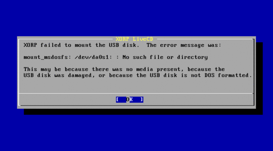
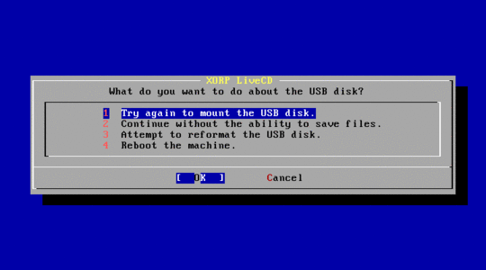
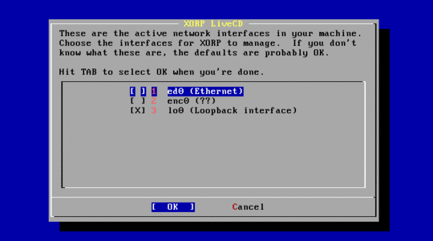

XORP Live CD
The XORP Live CD is a bootable CD containing the FreeBSD Unix operating system and the XORP routing code. It runs on an x86 PC only.
FreeBSD boots off the CD into a memory filesystem, and then starts up XORP directly. If there is a DOS floppy in the floppy drive, the XORP configuration file can be taken from the floppy and used for the router configuration. If the PC has a hard disk, that disk will not be modified by running the Live CD.
The Live CD serves a number of purposes:
- It's an easy way to try out XORP without needing to compile anything or reformat the disk on your PC.
- It's a quick way to get a relatively secure router on demand - you don't need to know anything about FreeBSD.
- It's a great tool for a student lab session, requiring no installation.
This page provides the following information about the XORP Live CD:
- Getting the XORP Live CD
- Running the XORP Live CD
- Starting the LiveCD the First Time
- XORP Live CD Quirks
| Getting the XORP Live CD |
|
The XORP Release Candidate 1.0 Live CD is available as an ISO image. You need to download it and burn it onto a CD. Some instructions on how to burn an ISO to a CD-R or CD-RW disk are here: |
| Running the XORP Live CD |
To run the Live CD may require you to modify your PC's BIOS settings.
In particular, the boot order should be:
If you want the router to store any configuration changes you have made when it is rebooted, you'll also need a floppy disk, but you can try the LiveCD without this. Then reboot the PC. The PC should boot from the CD. Normally it will display a low resolution XORP logo for 30 seconds to a minute while booting completes. Sorry - there's no progress bar to let you know anything is happening. If you've got a floppy in the floppy drive, and you've done this before, then the XORP configuration will be copied into the memory filesystem, along with passwords, sshd keys, etc. Then the XORP routing protocols will be started. If there's no floppy in the drive, or it doesn't have the files on it that XORP expects, then a simple interactive script will run to allow you to configure passwords and decide which network interfaces you want XORP to use. |
| Starting XORP the First Time |
|
The startup script that runs the first time you run XORP is quite simple. If there's no floppy in the floppy drive, or it's not DOS-formatted, you'll be presented with a warning similar to this one:  Hit enter, and you'll be given the following choices:  Use the cursor keys to move up and down to choose an option, and hit enter. If you hadn't got a floppy in the drive, you can add one now, and select 1. If your floppy is not DOS formatted, you can reformat it (erasing all the data on it) by selecting 3. If you don't have a floppy to hand, you can continue by selecting 2, but you won't be able to preserve any configuration changes you make later.
If you now have a blank writable DOS formatted floppy in the floppy drive, you'll get the following notice:
Hit Enter, and you will be prompted to enter the root password for the FreeBSD system. This will allow you to login to the machine as the superuser to diagnose any problems, or to see how XORP works behind the scenes. Next you will be prompted to enter the password for the "xorp" user account. On a normal XORP router, you might have many user accounts for the different router administrators, but on the LiveCD we just create one user called "xorp". Please do enter a reasonable password, as this user will be able to login over the network using the ssh secure shell and this password.
Finally you will be prompted as to which network interfaces you wish XORP to manage. These interfaces will show up in the default XORP configuration file, ready to have IP addresses assigned. The menu looks like:  Typically you will only want XORP to manage Ethernet interfaces and the loopback interface from the LiveCD at this stage, because XORP 1.0 has no built-in support for dial-up links. Move up and down using the cursor keys, and hit space to select or unselect an option (an "X" implies the option is selected). When you are finished, hit Tab, to select the "OK" button, and hit Enter. That's it. XORP will now finish booting. Once XORP has finished booting, you will be presented with a login prompt, and you can login to XORP as the "xorp" user with the password you have chosen, and interact with the XORP command line interface to complete the configuration, assign IP addresses, etc. |

| LiveCD quirks |
Saving ConfigThe location of the router configuration file used by XORP can be set using command line parameters, so different XORP systems might choose to use a different location for this file. On the XORP LiveCD, the configuration file is stored in /etc/xorp.cfg If you change the router configuration using the XORP shell, and want to save it, you need to enter the following in configuration mode: XORP> save /etc/xorp.cfg If you save to any other location, the file will still be preserved on the floppy, but will not be loaded automatically the next time XORP reboots.
DebuggingThe LiveCD includes two versions of the XORP system binaries. The normal version is mounted in a memory filesystem in /usr/local/xorp. This version has had the debugging systems stripped so that the binaries are small enough to reside in a memory filesystem. This allows them to load quickly, and to run on a PC with less memory. If you need a debugging version, you can umount /usr/local/xorp. A second copy of /usr/local/xorp with debugging binaries resides on the CD, and is revealed when the memory filesystem is unmounted. These binaries are rather large, and load slowly, so don't use them unless you really need them. Using them rather assumes you know how XORP works internally, so is beyond the scope of this tutorial.
Interface NamingIf you're used to Linux, you may be surprised that FreeBSD names it's ethernet interfaces with names like fxp0, fxp1, dc0 and xl3, rather than eth0, eth1, etc. The advantage is that you can tell exactly what the device driver is that's being used, and that if you know you have one Intel 10/100 and one DEC Tulip in the machine, you know they'll be called fxp0 and dc0, no matter which PCI slot they're in. The disadvantage is that it's more confusing for beginners who don't want to know this detail. Some people get religious about such things. We don't - this just reflects the underlying operating system's naming convention. If you ran XORP on Linux, you'd see eth0, etc. |
|
||||||||||||||||||||||||||||||